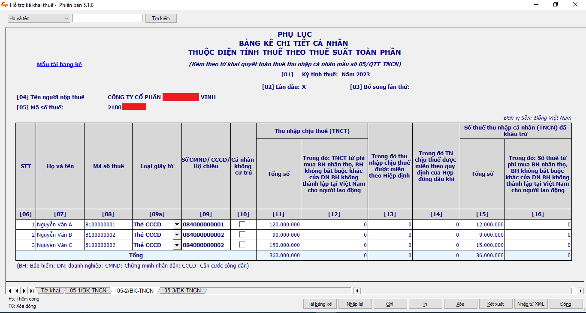

Hệ thống HĐĐT khởi tạo từ máy tính tiền đã và đang được ngành Thuế vận hành ổn định 24/7. Việc triển khai giải pháp HĐĐT khởi tạo từ máy tính tiền đã đáp ứng tốt hơn việc sử dụng HĐĐT của những hoạt động đặc thù, có thời gian hoạt động thường xuyên, liên tục, giá trị từng hóa đơn không nhiều nhưng tần suất phát hành hóa đơn lớn như: trung tâm thương mại; siêu thị; bán lẻ hàng tiêu dùng; ăn uống; nhà hàng; khách sạn; bán lẻ thuốc tân dược; kinh doanh vàng bạc; dịch vụ vui chơi, giải trí và các dịch vụ khác. Thực hiện chỉ đạo của Thủ tướng Chính phủ, Bộ Tài Chính, Ủy ban nhân dân tỉnh và của Tổng cục Thuế, trong thời gian tới, Cục Thuế tỉnh Trà Vinh sẽ tiếp tục phối hợp với các cơ quan liên quan trên địa bàn để triển khai các giải pháp nhằm chống thất thu ngân sách nhà nước, trong đó tập trung vào khu vực kinh tế ngoài quốc doanh, trọng tâm là lĩnh vực kinh doanh hàng hóa, dịch vụ trực tiếp đến người tiêu dùng bán lẻ ít lấy hóa đơn (ăn uống, nhà hàng, khách sạn, kinh doanh vàng bạc,...)
DANH MỤC
Tin tức
Đẩy mạnh triển khai hóa đơn điện tử khởi tạo từ máy tính tiền
Ngày 22/05/2024
Cảnh báo hành vi gian lận thông tin cá nhân để tính chi phí tiền lương, tiền công nhằm giảm nghĩa vụ
thuế
Ngày 23/04/2024

Trong thời gian qua, một số doanh nghiệp sử dụng thông tin của cá nhân (tên, mã số thuế, số CCCD) để kê khai, tính chi phí tiền lương, tiền công khi xác định nghĩa vụ thuế thu nhập doanh nghiệp trong khi không phát sinh trả thu nhập trên thực tế cho cá nhân đó. Đây là hành vi vi phạm pháp luật về thuế, nhằm mục đích gian lận, giảm số tiền thuế phải nộp của doanh nghiệp. Đồng thời cũng gây ảnh hưởng đến người nộp thuế là cá nhân khi bị doanh nghiệp tự ý sử dụng thông tin cá nhân.